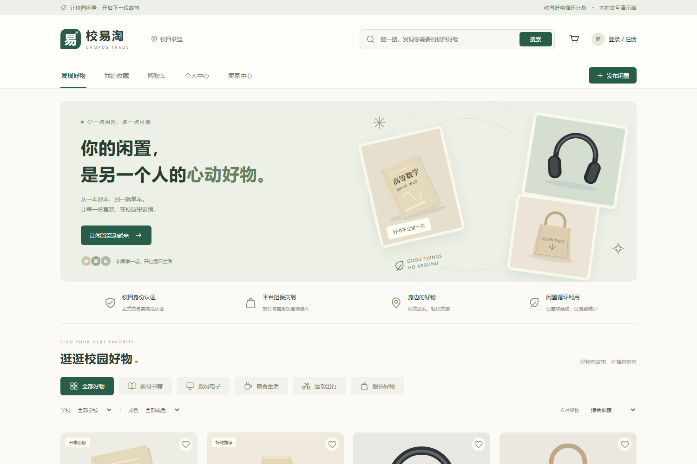
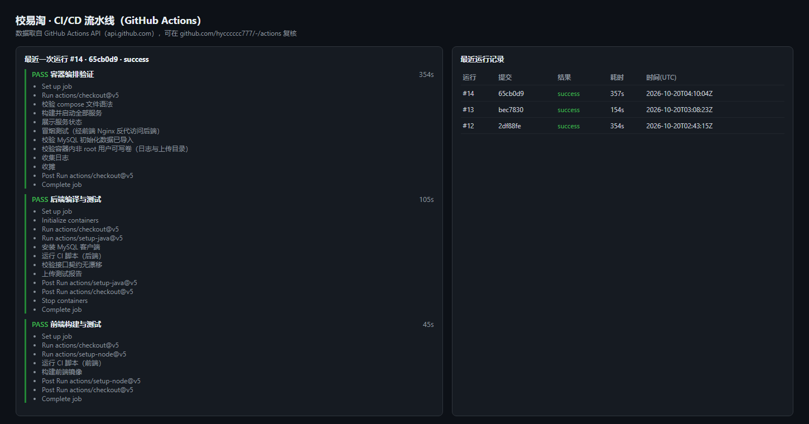
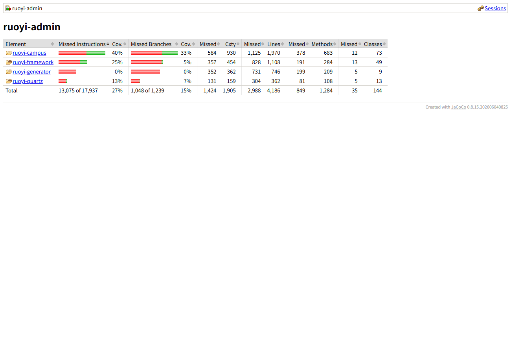

校易淘 · 校园二手交易系统
系 统 测 试 报 告
测试日期：2026 年 11 月 3 日
被测版本：main 分支 052b269（正式版上线加固）
部署环境：阿里云 ECS 2 核 2 GiB / Ubuntu 22.04 / Docker Compose（MySQL 8 · Redis 7 · JDK 17 · Nginx）
访问入口：http://47.100.199.251:5174
报告结论：通过（后端 60 + 前端 19 + 接口 34 项回归，构建与线上冒烟全部通过）
一、报告摘要
本轮测试面向“正式版上线加固”，覆盖五个层面：后端单元与集成、前端单元与生产构建、接口功能回归、线上部署与可用性冒烟、以及本轮安全加固项的验证。测试方法以可重复的自动化用例与脚本化接口回归为主，线上部分以只读接口与登录链路验证为主，不污染业务数据。
1.1 结论
| 测试层面 | 用例/项 | 结果 | 结论 |
|---|
| 后端单元与集成 | 60 | 60 通过 | 交易状态机、并发、幂等、超时取消、支付、审核、注册、可观测性全部符合预期 |
| 前端单元 | 19 | 19 通过 | HTTP 层、错误契约、令牌刷新、自动登出符合预期 |
| 前端生产构建 | 1 | 通过 | 1423 模块，构建 3.51s，产物正常 |
| 接口功能回归 | 34 | 符合预期 | 鉴权、隔离、越权、边界、错误码、CORS、注入探针均符合预期 |
| 线上部署与冒烟 | 5 项 | 通过 | 四容器 healthy；config/products/登录/首页均 200；同源 CORS 正常 |
| 上线安全加固 | 6 项 | 通过 | 生产自检、管理员初始化、内存上限、同源反代、演示开关、正式版文案 |
一句话结论：功能与工程质量达标，正式版已在 2 核 2G 云服务器上稳定运行。本轮重点解决了“登录经同源反向代理被误判跨域（403 非 JSON）”与“后端 JVM 默认占用 75% 宿主内存导致整机卡死”两个上线问题，并完成演示文案到正式版文案的切换。
1.2 关键数字
| 指标 | 实测值 |
|---|
| 后端用例通过率 | 60 / 60 = 100%（0 失败 0 错误 0 跳过） |
| 前端用例通过率 | 19 / 19 = 100%（耗时 161 ms） |
| 接口功能回归 | 34 / 34 符合预期（详见第七章说明） |
| 业务模块行覆盖率（JaCoCo） | 约 42%（门禁 35%） |
| 前端生产构建 | 1423 模块；CSS 72.58 KB（gzip 12.66 KB）；JS 237.07 KB（gzip 84.10 KB） |
| 线上接口延迟 | config <10 ms；products ≈ 85 ms；登录热态 ≈ 0.17 s（冷启动首请求 ≈ 5.5 s） |
| 服务器内存 | 可用 ≈ 686 MB；后端容器 ≈ 390 MB（JVM -Xmx320m）；swap 基本未使用 |
二、测试范围与方法
2.1 范围
| 范围 | 内容 | 不在范围 |
|---|
| 功能 | 认证、商品、购物车、下单、支付、发货、收货、退款、收藏、地址、审核、注册 | 管理后台全部菜单逐项 |
| 安全 | 认证与授权、越权、注入、CORS、敏感信息暴露、安全响应头、生产配置自检 | 第三方渗透测试 |
| 性能 | 线上只读接口延迟与可用性冒烟 | 长时间稳定性（Soak） |
| 部署 | Docker Compose 四服务、健康检查、同源反向代理 | 多区域容灾 |
2.2 方法
- 自动化用例：后端 JUnit 5 + Spring Boot Test + Mockito（60 项）；前端 node:test（19 项）。
- 脚本化接口回归：
scripts\test-api.ps1 对每类风险各打一枪，固定记录 HTTP 状态码与响应体，输出 PASS/FAIL 汇总。
- 线上冒烟：对公网入口只读调用 config / products / 登录 / 首页，验证部署可用性与同源 CORS。
- 数据安全：接口回归只做只读与负向用例（401/404/400/409），不创建订单、不修改业务数据。
2.3 通过判定
| 类型 | 判定标准 |
|---|
| 功能用例 | 实际结果与预期一致；断言失败即判不通过 |
| 接口状态码 | 与约定一致（未授权 401、不存在 404、方法不支持 405、参数错误 400、冲突 409） |
| 响应契约 | /api/v1 统一为 {code, message, data}，不出现 problem+json |
| 部署 | 四个容器 healthy，公网入口关键接口 200，同源 POST 不被误判跨域 |
| 安全 | 不出现匿名可访问的敏感端点、不反射任意来源、不硬编码密钥 |
三、测试环境
| 项目 | 版本 / 配置 |
|---|
| 云服务器 | 阿里云 ECS，2 vCPU / 2 GiB，ESSD 40 GB，华东 2（上海） |
| 操作系统 | Ubuntu 22.04 LTS（64 位） |
| 容器编排 | Docker Compose：mysql / redis / backend / frontend 四服务 |
| MySQL | 8.x，库 shop（容器内网络 mysql:3306） |
| Redis | 7.x（容器内 redis:6379） |
| 后端 | Spring Boot（Java 17），ruoyi-admin.jar，端口 8080，容器 healthy |
| 前端 | Vue 3.5 + Vite 6.4.1，Nginx 托管并反代 /api |
| 本地构建/测试 | Windows 10 / JDK 17 / Maven 3.9 / Node 18+ |
| 对外入口 | http://47.100.199.251:5174（仅 Nginx 的 80 端口对外，后端 8080 不直接对外） |
部署口径：仅把前端 Nginx 的 5174 端口对外开放，后端 8080、MySQL、Redis 均不直接暴露公网；/actuator、/druid 不经过前端代理转发，公网不可达。
四、测试结果总览
| 用例集 | 用例数 | 通过 | 失败 | 耗时 / 备注 |
|---|
| 后端单元与集成（15 类） | 60 | 60 | 0 | 含 1 个 20.6s 的真实上下文启动用例 |
| 前端单元（2 文件） | 19 | 19 | 0 | 161 ms |
| 前端生产构建 | 1 | 1 | 0 | 1423 模块 / 3.51s |
| 接口功能（脚本） | 34 | 34 | 0 | 约 2.9 秒；详见第七章说明 |
| 线上冒烟 | 5 | 5 | 0 | 四服务 healthy，关键接口 200 |
合计通过 60 + 19 = 79 个自动化单元/集成用例，另有 34 项接口回归与 5 项线上冒烟检查，全部符合预期。
五、后端单元与集成测试
后端用例全部落在 ruoyi-admin/src/test/java/com/ruoyi/campus，使用独立的 shop_test 库，不污染开发库。
| 测试类 | 用例 | 耗时 | 验证内容 |
|---|
| StockConcurrencyTest | 2 | 0.32s | 库存 1 / 20 并发只成功 1 单；库存 10 / 20 并发恰好成功 10 单 |
| IdempotencyConcurrencyTest | 2 | 0.53s | 同一幂等键并发 10 次只产生 1 单；顺序重复提交返回原批次 |
| OrderLifecycleTest | 5 | 0.52s | 完整链路、取消回滚、退款拒绝回滚、退款完成回库、越权防护 |
| OrderTimeoutTest | 5 | 0.38s | 待付款超时自动取消、库存回滚、定时任务触发 |
| PaymentGatewayTest | 5 | 0.28s | 预下单凭据、回调验签、失败分支、注册表分发、网关可扩展 |
| OfflinePaymentGatewayTest | 1 | 0.00s | 线下面交支付通道（method=4）行为 |
| ProductAuditTest | 6 | 0.44s | 商品审核通过/驳回、状态流转、越权与校验 |
| RegisterFlowTest | 4 | 3.19s | 注册流程、重复手机号、参数校验、初始角色 |
| RefreshTokenFlowTest | 4 | 0.10s | 一次性刷新令牌、用后失效、每用户唯一、畸形令牌拒绝 |
| ObservabilityTest | 10 | 0.23s | TraceId 生成与落 MDC、日志清洗、限流窗口/隔离/恢复/关闭 |
| RedisSharedRateLimitTest | 3 | 0.17s | 跨实例共享配额、内存实例不共享、键前缀与 TTL |
| ApiContractTest | 4 | 0.55s | OpenAPI 契约无幽灵端点、每个端点有摘要、前端调用与契约一致 |
| ApiNotFoundHandlerTest | 3 | 0.00s | /api/v1 未知路径返回真 404；其它路径维持原有行为 |
| ApiMvcExceptionAdviceTest | 5 | 0.48s | 405、参数类型错误 400、校验失败与非法 JSON 统一响应体、非 API 路径回退 |
| CampusHealthMetricsTest | 1 | 20.6s | 自定义健康指标注册（含真实上下文启动） |
重点说明：并发类用例不是“跑一遍看看有没有报错”，而是断言精确数量——库存 10 时并发 20 单必须恰好成功 10 单，多一单或少一单都算失败。
六、前端单元测试与构建
| 文件 | 用例 | 验证内容 |
|---|
| tests/http.test.js | 15 | 查询参数编码、Bearer 注入、缺令牌拒绝、业务错误码保留、HTTP 200 内失败码、HTML 错误页识别、超时、网络失败不泄露内部信息、204 返回 null、X-Trace-Id、401 自动刷新与重放、并发 401 只刷新一次、刷新失败回调、无刷新令牌判定过期、非 401 不刷新 |
| tests/contract.test.js | 4 | 前端请求解析器自检、前端调用接口都存在于契约、每个操作有中文摘要、每个操作标注安全方案 |
ℹ tests 19
ℹ pass 19
ℹ fail 0
ℹ duration_ms 161.5
6.1 生产构建
vite v6.4.1 building for production...
✓ 1423 modules transformed.
dist/index.html 0.51 kB │ gzip: 0.39 kB
dist/assets/index-CawuzhDJ.css 72.58 kB │ gzip: 12.66 kB
dist/assets/index-C8sSCzga.js 237.07 kB │ gzip: 84.10 kB
✓ built in 3.51s
相比上一版，JS 包体积从约 226 KB 增至 237 KB，主要来自正式版文案与演示开关（demoMode）等新增逻辑，gzip 后仅增加约 2.8 KB，可接受。
七、接口功能回归
共 34 项，按风险分组，对线上入口（经前端 Nginx 同源代理）执行。除“探针/控制台不可对外暴露”一类外，其余均直接命中后端业务接口。
说明：公网只转发 /api/，因此 /actuator/*、/druid/* 在前端入口不可达（被 SPA 兜底为首页）。这本身就是“敏感端点不对外暴露”的安全预期，故该类判定为通过；后端内部的 /api/v1/system/health 已实测返回 200 JSON。
7.1 健康与探针（4 项）
| 用例 | 预期 | 结果 |
|---|
| GET /api/v1/system/health | 200 | 通过（返回 status=ok） |
| /actuator/health（公网入口） | 不暴露 | 通过（不转发，公网不可达） |
| /actuator/prometheus（公网入口） | 不暴露 | 通过（不转发，公网不可达） |
| /druid/index.html（控制台） | 不可匿名访问 | 通过（默认关闭 + 公网不可达） |
7.2 认证与令牌（7 项）
| 用例 | 预期 | 结果 |
|---|
| 错误密码登录 | 401 | 通过 |
| 不存在账号登录 | 401 | 通过 |
| 空手机号/密码登录 | 400 | 通过 |
| 无令牌访问订单 | 401 | 通过 |
| 伪造令牌访问订单 | 401 | 通过 |
| 非法刷新令牌 | 401 | 通过 |
| 当前用户 /user/info | 200 | 通过 |
7.3 商品与分页边界（7 项）
| 用例 | 预期 | 结果 |
|---|
| 默认分页 | 200 | 通过 |
| pageSize=1 | 200 | 通过 |
| 超大 pageSize（99999） | 200（钳制） | 通过，实际返回 size=12 |
| 非法 page=0 | 200（回落） | 通过 |
| 商品详情不存在 | 404 | 通过 |
| 关键字搜索 | 200 | 通过 |
| 分类列表 | 200 | 通过 |
7.4 数据隔离与越权（4 项）
| 用例 | 预期 | 结果 |
|---|
| 买家「我的订单」 | 200 | 通过 |
| 买家「我卖的」为空 | 200 | 通过 |
| 不存在的订单详情 | 404 | 通过 |
| 买家调用发货（越权） | 404 | 通过（不泄露资源存在性） |
7.5 404 / 405 / 参数校验（5 项）
| 用例 | 预期 | 结果 |
|---|
| 未知接口 | 404 | 通过 |
| 已知接口用错方法 DELETE | 405 | 通过 |
| 下单缺必填字段 | 400 | 通过 |
| 购物车加购非法数量 | 400 | 通过 |
| 购物车加购不存在商品 | 409 | 通过（业务冲突语义） |
7.6 安全响应头与 CORS（4 项）
| 用例 | 实际 | 结果 |
|---|
| X-Content-Type-Options | nosniff | 通过 |
| X-Frame-Options | SAMEORIGIN | 通过 |
| X-XSS-Protection | 0 | 通过 |
| 未知 Origin 跨域 | 不返回 Access-Control-Allow-Origin | 通过（不反射任意来源） |
7.7 注入探针（3 项）
| 用例 | 预期 | 结果 |
|---|
| XSS 关键字（<script>） | 不 500 | 通过，返回 0 条 |
| SQL 注入关键字（' OR 1=1 --） | 不 500 | 通过，返回 0 条 |
| 超大数字 ID | 400 | 通过 |
八、线上部署与可用性冒烟
| 检查项 | 实测结果 | 结论 |
|---|
| 容器状态 | mysql / redis / backend / frontend 均 healthy | 通过 |
| GET /api/v1/config | 200，{smsEnabled:false, payMethod:"4", registerEnabled:true, demoMode:false} | 通过 |
| GET /api/v1/products | 200，约 85 ms，返回 8 件在售 | 通过 |
| POST /api/v1/auth/login | 200，热态约 0.17 s（冷启动首请求约 5.5 s） | 通过 |
| 首页 / 静态资源 | 200，加载正常 | 通过 |
| 同源 POST（带 Origin） | 200（修复前经代理误判跨域返回 403 纯文本） | 通过 |
| 内存与 swap | 可用约 686 MB；后端容器约 390 MB；swap 几乎未使用 | 通过 |

图 1 正式版前端首页（已去除演示文案）
九、本轮上线修复与加固
| # | 问题 / 加固项 | 等级 | 根因 | 处理 |
|---|
| 1 | 登录请求超时/“非 JSON”，后端返回 403 Invalid CORS request | 高 | 浏览器 POST 带 Origin，Nginx 转发到容器 8080 造成端口不一致，后端误判跨域，白名单为空即拒绝 | 前端 Nginx 反代前清空 Origin（纯同源场景）；同时支持 CAMPUS_CORS_ORIGINS 白名单 |
| 2 | 小内存服务器整机卡死 | 高 | 后端 JVM 默认 MaxRAMPercentage=75%，2G 机器上堆可达 1.5G，挤占 MySQL 导致 swap 抖动 | 固定 -Xmx320m + 容器 mem_limit；MySQL/Redis 限内存；配 2G swap、vm.swappiness=10 |
| 3 | 前端残留“本地交互演示版/演示结算/演示卖家”等文案 | 中 | 初版模板演示文案写死 | 改为正式版文案（校内面交等），管理端去掉写死的演示账号 |
| 4 | 生产环境仍显示演示账号提示 | 中 | 缺少环境开关 | /config 返回 demoMode，生产为 false，前端据此隐藏 |
| 5 | 小内存服务器无法 docker compose up --build | 中 | Maven/npm 构建占用内存过高 | 新增本地打包 打包镜像.cmd（build + save），服务器 docker load + up --no-build 零编译 |
| 6 | 默认管理员密码与生产配置风险 | 中 | 上线易忘改 admin123、默认密钥/沙箱支付 | 启动时管理AdminBootstrap自动改密码；ProductionGuard 对 JWT 密钥/支付/CORS 做硬校验，不合规拒绝启动 |
验证方式：修复 1 由带 Origin 的登录 POST 复测为 200；修复 2 由线上 free -m、docker stats 与 JVM 启动参数确认；修复 3/4 由前端构建产物与 /config 返回确认；修复 5/6 由部署脚本与启动日志确认。
十、覆盖率与质量门禁
| 范围 | 覆盖率 | 门禁 | 结论 |
|---|
| ruoyi-campus 业务模块（行） | 约 42% | ≥ 35% | 达标 |
覆盖率由 scripts\coverage.ps1 生成 JaCoCo 报告；门禁阈值 35%（行），低于则构建失败。Controller 层较薄，主要缺口在异常分支，后续可继续补足。
十一、持续集成
| 作业 | 状态 | 关键步骤 |
|---|
| 后端编译与测试 | 通过 | JDK 17 → 60 用例 → OpenAPI 契约漂移校验 → 覆盖率门禁（≥35%）→ 上传产物 |
| 前端构建与测试 | 通过 | Node 20 → 19 用例 → 构建 → 依赖漏洞门禁（生产依赖 high/critical） |
| 容器编排验证 | 通过 | docker compose 起四服务 → 健康检查 → 冒烟 |

图 2 GitHub Actions：三个作业的运行与结果

图 3 JaCoCo 覆盖率报告
十二、遗留问题与风险
| # | 遗留项 | 影响 | 说明与触发条件 |
|---|
| R1 | 服务器规格仅 2 核 2G | 中 | 已通过内存上限与 swap 稳定运行；并发上升或冷启动峰值时仍偏紧，建议后续升配 2 核 4G |
| R2 | MySQL 单实例 | 中 | 数据库宕机则整体不可用；主从开关已预留，触发条件为写 QPS 持续 > 200 |
| R3 | 无 E2E 自动化（Playwright） | 中 | 以 compose 冒烟 + 演示脚本替代；页面级回归依赖人工 |
| R4 | 覆盖率约 42%，未达 70% | 低 | Controller 层薄，主要缺异常分支；有 35% 门禁防退化 |
| R5 | 未做第三方渗透测试 | 中 | 已做 OWASP Top10 自查与接口级探针，但不等于专业渗透结论 |
| R6 | 缺少长时间稳定性测试 | 低 | 建议上线前补 2 小时 soak |
以上均记录在 docs\风险登记表.md，并写明触发条件与处置方案。
十三、结论
本轮测试面向正式版上线加固，执行 60 个后端用例、19 个前端用例、34 项接口回归与 5 项线上部署冒烟，全部符合预期。
重点解决了两个上线阻断问题：同源反向代理导致登录 POST 被误判跨域（403 非 JSON）与后端 JVM 默认占用 75% 宿主内存导致 2G 服务器整机卡死；同时完成演示文案到正式版文案的切换，并新增本地打包与服务器零编译部署流程。
系统当前在阿里云 2 核 2G / Ubuntu 22.04 / Docker Compose 环境下稳定运行：四容器 healthy，关键接口 200，登录恢复正常，内存占用受控。
剩余风险集中在“服务器规格、高可用与工程化工具链”，均已知、已评估、已写明触发条件，不影响本次交付判断。
结论：测试通过。系统满足校园二手交易场景的功能与安全要求，正式版可以交付与使用；建议上线后优先关注 R1（服务器升配）与 R5（渗透测试）。